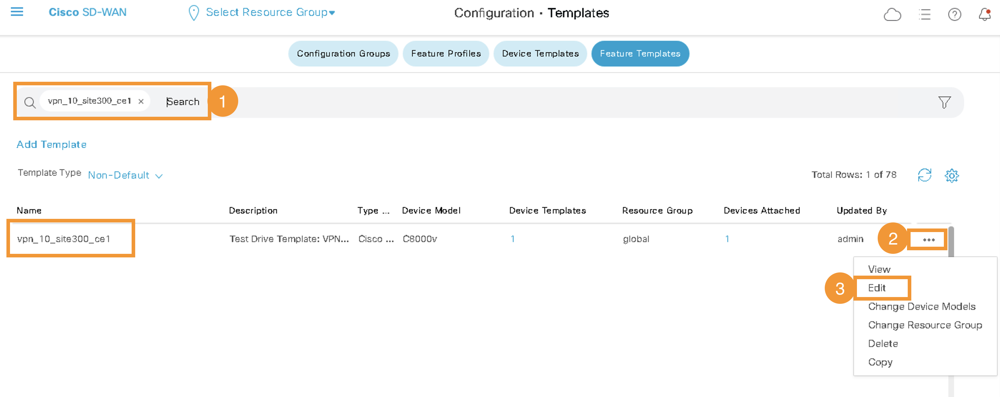

Task 5: Umbrella integration with Site-300
In this task we will enable intergration Site 300 with Cisco Umbrella.
Step 1 - Umbrella Organization ID
- On the RDP session (jumphost), logon to Umbrella Dashboard by clicking on Google Chrome Browser bookmark named
Umbrella SSO. It will automtically open the Umbrella dashboard and auto-login using single-sign-on.
| Note: |
|---|
| Click through the security warning to ignore the certificate (if prompted). |
- Umbrella organization (Org) is a separate instance of Umbrella and has its own dashboard. An
Org IDis used to identify each organization and for integrating Umbrella with Cisco SD-WAN. ThisOrg IDis a number and part of the Umbrella web URL and must be extracted from the URL. ThisOrg IDwill be required at a later step as part of vManage configurations for Umbrella SIG integration. Once you are logged into the Umbrella dashboard, extract[Org ID]from the URL in the address bar as per below syntax:
https://dashboard.umbrella.com/o/[Org ID]/#/...
Below figure is only an example showing Org ID of 1234567:

Step 2 - Umbrella API Key
We will generate an API token (Key, Secret) from the Umbrella dashboard, which will be used in the SD-WAN (vManage) configurations in later step.
-
After logging on Umbrella dashboard (as per previous step), navigate to Admin > API Keys page.
-
On this page, Click on
Legecy Keys. Next, click onUmbrella Managementand then click onGenerate Tokenas shown in below figures. This will generate APIKeyandSecret


- You must copy both
KeyandSecreton a notepad - this information, along withOrg IDin pervious step will be used later on during vManage configurations.
| Note: |
|---|
You must copy both Key and Secret in a notepad. It is only shown on this page once and will not be visible afterwards. |
Step 3 - Update SIG Feature Template on vManage
Now we will add these Umbrella API credentials (Key & Secret) along with Org ID in vManage configurations. This will allow vManage to automate IPSec tunnel configurations as part of it's workflow.
- On vManage, navigate to Configuration > Templates as shown below:

- Then click on
Feature Templatestab as shown in below screenshot:

- Then in the search bar type
sigand find the template with name ofVIP23-SIG-Feature-Template. Further, click on three dots (...) at the right side of this feature template and click Edit as shown in below Figure:

- Click on "Click here to create - Cisco SIG Credentials Template" as shown in below Figure:

- Enter Umbrella
Org ID,KeysandSecretthat were copied & saved in previous steps and then clickSaveon this page:

- Then click
Updateat the bottom of the page:

After successfully saving Umbrella API Token credentials, in the next step, let's apply this Feature template to Site300-cE1 Device template so IPSec tunnels can be established between Umbrella SIG and Site300-cE1.
Step 4 - Apply SIG Feature Template on vManage
The previously saved SIG template will be applied to Site300-cE1 device for Umbrella SIG integration i.e. setting up IPSec tunnels with between Site300 and Umbrella cloud.
- On vManage, navigate to Configuration > Templates. And then click on
Device Templatesas shown below:

- Search for the Site300-cE1 device in the
Descriptionfield. Then click on three dots (...) at the right side of Site300-cE1 and click Edit as shown in below Figure:
- Once the
Device Templateis open, Click on theTransport and Management VPNto navigate to that section:

- Click on
Cisco Secure Internet Gatewayto add this template to the Device. After adding it, select its value ofVIP23-SIG-Feature-Templatefrom the drop-down menu as shown in below Figure:

- Scroll all the way down to
Additional Templatessection and ensure Cisco SIG Credentials ofCisco-Umbrella-Global-Credentialsare selected:

-
Now click
Updateon this page -
Then click
Nextto proceed forward with configuration:

- Click
Configure Devicesat the bottom of the page to push the configuration from vManage towards cEdge:

- Lastly, wait and verify that Config-Push from vManage to cEdge device is
Success
Now the configurations for IPSec tunnels creation between Site-300 cEdge and Umbrella cloud are done.
Step 5 - Verify SIG Tunnels
In this step we will confirm that the IPSec tunnels between Umbrella cloud and SD-WAN Site-300 are UP by accessing Umbrella dashboard.
-
If access to Umbrella dashboard is not already open, on the RDP session, launch Google Chrome and click on
Umbrella SSObookmark to open up a session to Umbrella dashboard. -
After successful login to Umbrella Dashboard, navigate to Deployments > Core Identities > Network Tunnels

- It will take few minutes for tunnels to be Active. The tunnels will remain in
Unestablished Tunnelsstate initially. After few minutes there should be 2Active Tunnelsas shown in below screenshot:

-
Using mRemoteNG application on RDP session, launch console session of Ubuntu
Site300-Ubuntu-VPN10host (Virtual Machine / VM). -
Within the console of this Ubuntu VM, launch the Web Browser application and access website
welcome.umbrella.com. This is to verify if Site-300 is protected by Umbrella. What message do you see when you try to access this website?

Why did it fail?
It failed because the traffic from SD-WAN site is still routed through the normal interface and not through the IPSec tunnels. We have to create a Service Route to redirect traffic from SD-WAN site on Umbrella SIG Tunnels towards Umbrella Cloud - this will be performed in next step.
Step 6 - Redirect Traffic to SIG tunnels
Let's add a Service Route to SIG in order to redirect traffic from VPN-10 on Site-300 towards Umbrella cloud.
- On vManage, navigate to Configuration > Templates. And then click on
Feature Templates:
- In search bar type
vpn_10_site300_ce1. From the search results, locate this template and Click the three dots (...) on the right side of this template. Then clickEditin the dropdown menu as shown in below Figures:

- On the next page, Click
Service Routeto navigate to that section:

- Then on this section, Click on
New Service Routeand Add a route as per: Prefixof0.0.0.0/0ServiceofSIG(default setting)- Click
Addand thenUpdateat the bottom of the page as shown in below Figure:

-
Click
Nextand then clickConfigure Devices -
Lastly, wait and verify that Config-Push from vManage to cEdge device is
Successas shown below:

- Using mRemoteNG application on RDP session (Jumphost), launch console session of ubuntu
Site300-Ubuntu-VPN10VM again. Launch Chromium Web browser and check again by browsing towelcome.umbrella.comURL/website. TheWelcome to Umbrellamessage indicates that the site is now protected by Umbrella - specifically the traffic in VPN-10 of Site-300 is protected by Umbrella.

- On the console session of ubuntu VM
Site300-Ubuntu-VPN10(by using mRemoteNG application), verify traffic routing on this Site-300 by running below command:
traceroute 8.8.8.8
From the output of traceroute, what do you notice different to the output in earlier task on this VM/host? (Tip: hop count etc)